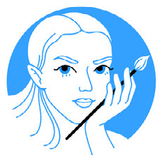

---
---
<!doctype html>
<html lang="en">
  <head>
    <meta charset="utf-8">
    <meta name="viewport" content="width=device-width, initial-scale=1">
    <meta name="description" content="Paintings and projects by Katzaryna.">
    <meta name="theme-color" content="#ffffff">
    <title>Katzaryna — Artist</title>
    <link rel="stylesheet" href="{{ '/assets/css/styles.css' | relative_url }}">
  </head>
  <body>
    <header class="site-header page">
      <button class="portrait-toggle" id="portrait-bio-toggle" type="button" aria-label="Toggle artist bio" aria-controls="artist-bio" aria-expanded="false">
        
      </button>
      <div class="header-content">
        <a class="wordmark" href="./">Katzaryna</a>
        <nav class="social-nav" aria-label="Artist links">
          <details class="nav-item bio-link" id="artist-bio">
            <summary>BIO</summary>
            <span>I’m Katsiaryna Zarouskaya, a professional illustrator based in Warsaw, Poland
Bachelor’s degree in Graphic Design (Belarusian State Academy of Arts)
I specialize in advertising, editorial, and fashion illustration, creating engaging visuals for both digital and print media.
Combining traditional and digital techniques, I aim to capture subtle feelings, quiet stories, and the beauty of everyday moments. In my work, I strive for honesty and authenticity, keeping each piece sincere and emotionally true.
Let’s collaborate and make the world a bit more beautiful.
I’m open to new projects — feel free to reach out.</span>
          </details>
          <details class="nav-item email-contact">
            <summary aria-label="Show email address">
              <svg viewBox="0 0 32 32" aria-hidden="true"><path d="M4 8h24v17H4zM5 9l11 9L27 9"/></svg>
            </summary>
            <a class="email-address" href="mailto:katzaryna@gmail.com">katzaryna@gmail.com</a>
          </details>
          <a class="nav-item linkedin-link" href="https://www.linkedin.com/in/katsiaryna-zarouskaya-9083a5105" target="_blank" rel="noopener noreferrer" aria-label="LinkedIn">
            <span aria-hidden="true">in</span>
          </a>
          <a class="nav-item instagram-link" href="http://instagram.com/kat.zaryna" target="_blank" rel="noopener noreferrer" aria-label="Instagram">
            <svg viewBox="0 0 32 32" aria-hidden="true"><rect x="5" y="5" width="22" height="22" rx="6"/><circle cx="16" cy="16" r="5"/><circle class="instagram-dot" cx="23" cy="9" r="1"/></svg>
          </a>
        </nav>
      </div>
    </header>

    <main class="page">
      <section class="gallery" id="gallery" aria-label="Selected paintings">
        {% assign projects = site.pages | where_exp: "project", "project.layout == 'project'" | sort: "title" %}
        {% for project in projects %}
          {% for image in project.images %}
        <figure>
          <a class="gallery-link" href="{{ project.url | relative_url }}" aria-label="View {{ project.title | escape }} project">
            
          </a>
        </figure>
          {% endfor %}
        {% endfor %}
      </section>
    </main>

    <footer class="page site-footer">
      <span>© 2026 Katzaryna</span>
      <a href="mailto:katzaryna@gmail.com">Email</a>
    </footer>

    <aside class="consent" id="analytics-consent" aria-label="Analytics settings" hidden>
      <p>This site uses Google Analytics to understand how visitors use it. You can choose whether to allow analytics.</p>
      <button type="button" id="accept-analytics">Allow</button>
      <button type="button" id="reject-analytics">Decline</button>
    </aside>

    <script src="{{ '/assets/js/analytics.js' | relative_url }}"></script>
    <script src="{{ '/assets/js/bio.js' | relative_url }}"></script>
  </body>
</html>
